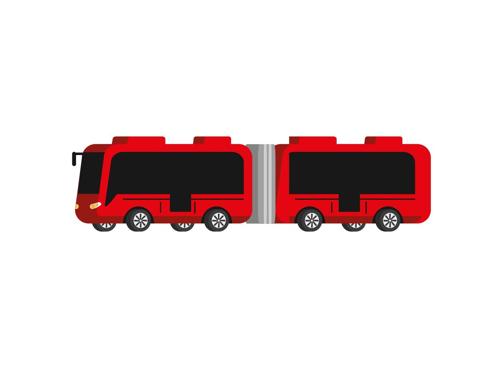
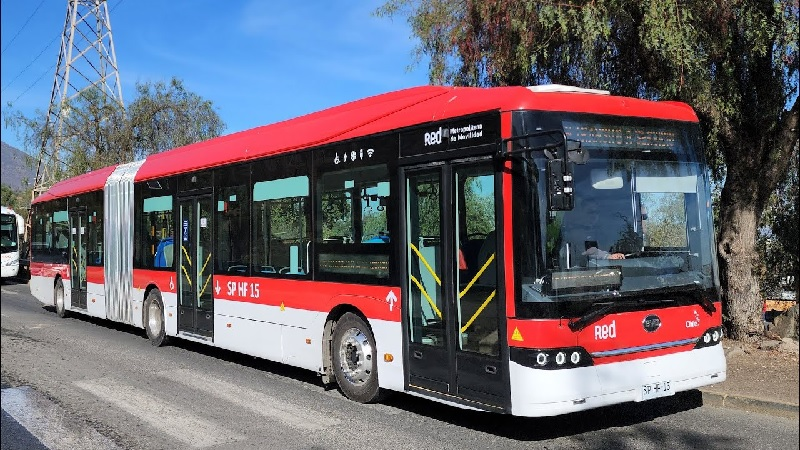
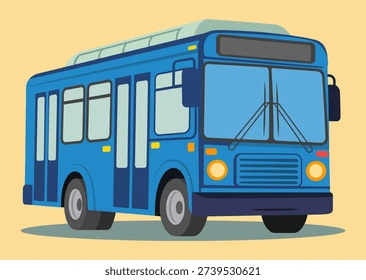
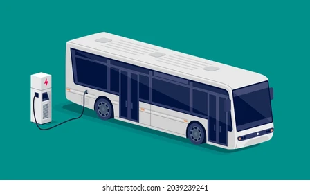
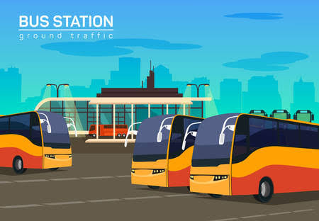
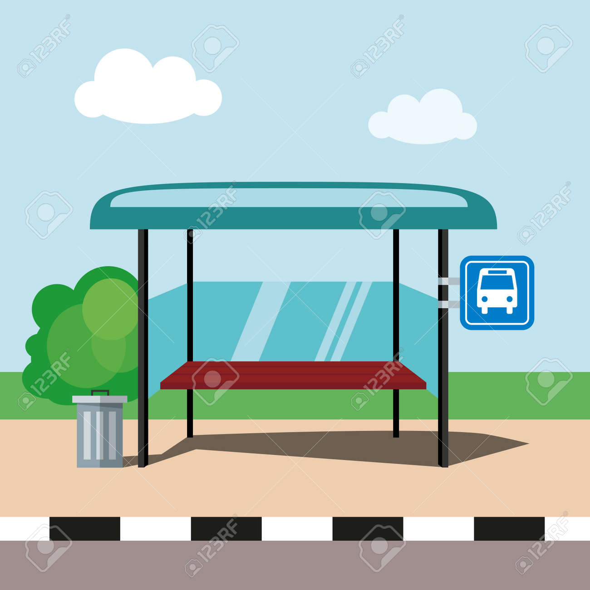

Bus Articulado
Unidad de alta capacidad para rutas troncales principales.
Explora los tipos de unidades y sistemas del monitoreo urbano.

Unidad de alta capacidad para rutas troncales principales.

Máxima capacidad de pasajeros en corredores de alta demanda.

Unidad de integración desde barrios y zonas periféricas.

Unidad ecológica de cero emisiones para el centro urbano.

Punto de transferencia y despacho de flota.

Estación equipada con paneles de información en tiempo real.
Esta galería se adapta a teléfonos, tabletas y computadoras mediante CSS3.